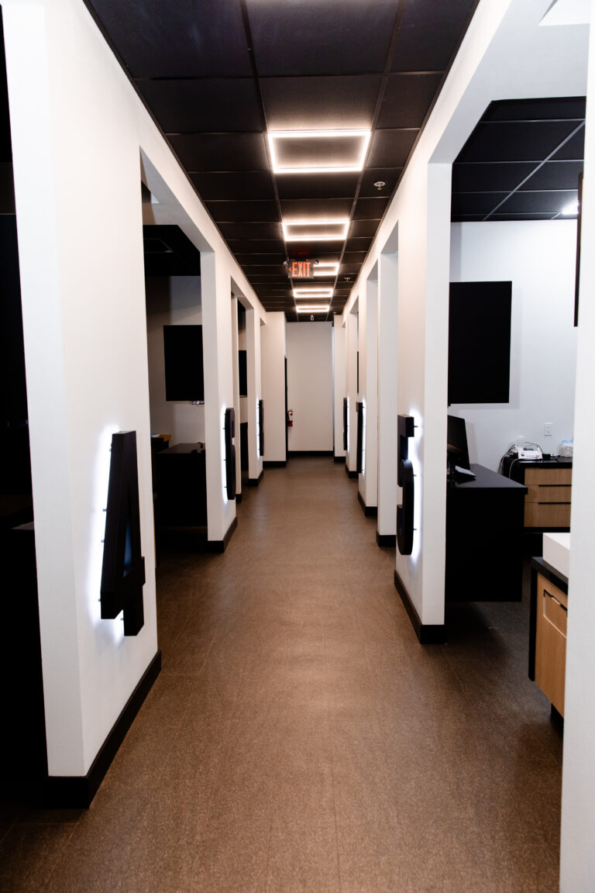

Dr. Karthikeyan Subramani.
MSc in Orthodontics and Dentofacial Orthopedics, and holder of the Milo Hellman Award from the American Association of Orthodontists in 2019.
General, cosmetic, restorative, surgical, periodontic and orthodontic care, delivered in house by one clinical roster across seven offices.

Your first visit is an exam and an X-ray for $45, or $29 if you are a senior.
Our Lake Mead office is rated 4.5 stars across 506 patient reviews on Birdeye, fetched 30 July 2026.
That figure belongs to the Lake Mead office. It is not a practice wide rating, and it is never stated as one.
The Better Business Bureau rates the practice B+ and records 23 years in business, fetched 30 July 2026.
The BBB also records 3 complaints filed, 1 of them unresolved. The practice is not BBB accredited.
The gum and bone that hold your teeth in place, from bleeding gums to deep cleaning.
PeriodonticsFillings, crowns, bridges, inlays, onlays, dentures, implants and root canals.
RestorationsExams, cleanings, preventative care, digital X-rays, fluoride and sealants.
General dentistryPorcelain veneers and teeth whitening, for a tooth that is sound but does not look how you want.
Cosmetic dentistryNot sure which one you need.
Describe the problem and we will route you to the clinician who treats it.
ContactThree offices publish Saturday hours, one is Saturday by appointment, and two publish Sunday hours.
All seven offices
7469 W. Lake Mead Blvd., Suite 270, Las Vegas 89128
(702) 289-4424Publishes Sunday hours, 8:30 AM to 3 PM.
1825 S. Nellis Blvd., Las Vegas 89107
(702) 452-3552Open to 7 PM on Tuesday and Thursday.
8961 W. Sahara Ave., Suite 108, Las Vegas 89117
(702) 360-4800Open Saturday, and to 7 PM on Wednesday.
5195 Camino Al Norte Rd., North Las Vegas 89031
(702) 509-1967Open Saturday, 9 AM to 5 PM.
2633 W. Horizon Ridge Pkwy., Suite 130, Henderson 89052
(702) 897-7001Open Saturday, 9 AM to 5 PM.
6311 N. Decatur Blvd., Suite 140, Las Vegas 89130
(702) 522-0119Publishes Sunday hours, 8:30 AM to 3 PM.
5095 S. Blue Diamond Rd., Suite 105, Las Vegas 89139
(702) 331-0010Saturday here is by appointment only.
Not a network, not a referral service, and not a franchise.
One clinical roster works across all seven. Ten named dentists, employed here. Where a degree, a school, a year or an award is shown, it is quoted from our own roster.
That is why the standard does not change with the address. The office nearest your home and the office nearest your work are the same practice.

It is also why you are not handed on for the care we provide. The clinician who sees you next belongs to the same practice, at whichever office you choose.
Six areas of care are delivered in house: general, cosmetic, restorative, surgical, periodontic and orthodontic. Within those six areas, the specialist you need is already on our roster.
Who owns it, how long it has been here, and what we can prove.
About the practiceWhere a practice refers out, one office does the checkup and the specialist part happens across town. You start again with a stranger, at a business with no connection to the first.
Here: for all six areas we cover, the specialist is on our roster, inside the same practice.
A group with a similar footprint may run its offices as separately owned or separately branded practices. Consistency between them is not something that model can promise.
Here: seven offices under one brand, one roster and one domain.
When each office is its own business, the answer you get depends on which door you walked through.
Here: the same practice employs the clinician at every one of the seven.
The ADA Health Policy Institute reports that 55% of adults aged 65 and older have no dental benefits, fetched 30 July 2026.
Dental visits track coverage directly. Without benefits, a routine check becomes a bill you have to decide about, so it waits.
You can see who is on that roster, and what our own site records for each of them, before you book.
MSc in Orthodontics and Dentofacial Orthopedics, and holder of the Milo Hellman Award from the American Association of Orthodontists in 2019.
A second generation dentist, DDS from UCLA in 1995, with over 22 years of practice experience.

DDS from UCLA in 1976, with more than 41 years in practice.

Born and raised in Las Vegas, DMD from UNLV in 2023, member of the ADA and the American Academy of Implant Dentistry.
Two of our dentists, Dr. Andrade and Dr. Landaverde, are fluent in Spanish.
Meet our dentistsThe Birdeye aggregate remains the only sourced review figure.
One price, stated before you book, covering the examination and the X-rays. Treatment is quoted afterwards, once someone has actually looked.
No expiry, no exclusions and no senior age threshold is published for this offer.
The new patient offerEvery number on this site carries its source, its scope and the date we fetched it.
Where we do not have the answer yet, the page says so.

Book an appointment at whichever of the seven offices suits your week. Or call the office nearest you and describe what is bothering you.